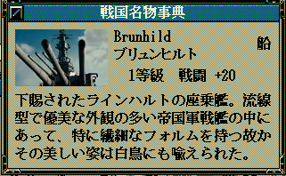

<h2><i class="fa fa-file-video-o fa-fw"></i>動画による家宝画像</h2>
<ul class="checkliset">
    <li><h3>概要</h3>
    <p>天翔記では家宝は静止画ですが、動画に対応するものとなります。</p>
    </p>
    <li><h3>ダウンロード</h3>
    <dl>
        <dt>
        <div class="download_file">DOWNLOAD ⇒ <a href="%(file)s">kahou_24bit_movie.zip</a>ファイル。</div>
        </dt>
        <dd>
        <div class="update_time">└更新日 %(year)04d/%(mon)02d/%(mday)02d</div>
        </dd>
        <dt>
    </dl>
    <li><h3>動作環境</h3>
    <p><a href="?page=nobu_mod_the_tsmod">TSMod</a>の導入が必要となります。</p>
    </li>
    <li><h3>使用方法</h3>
    <ul>
        <li>家宝の画像素材は、普通の画像だけではなく、「動画」でもかまいません。
        <li>通常のaviフォーマットであれば、再生が可能です。
        <li>zipファイルにあるものは、そのわかりやすいサンプルとなっています。<br>
        "kahou_24bit/EX" のフォルダに動画を置いてください。<br>
        対応する名前が付いた家宝(「大和」という家宝や、「インディアナ」、あるいは「ミズーリ」という家宝)を作れば、その動画が再生されます。<br>
        又、「画像」・「動画」ともに、以下のように、横幅サイズが変形した場合、画像最大幅100px程度までは、文字レイアウトが自動的に調整されます。<br>
        <br>
        <br>
    </ul>
</ul>